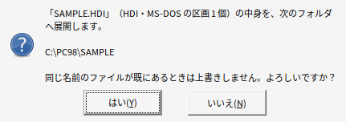
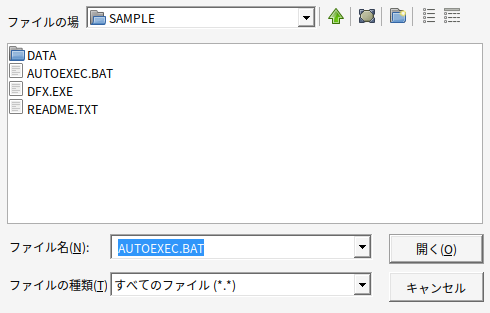
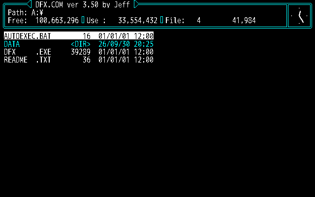

ハードディスクイメージの中身をインストールアシスタントでフォルダへ展開し、INI を作ってゲームを始めるスタイルです。
ハードディスクイメージの形で配られているソフト（フリー宣言されたタイトルなど）は、PC98PLAYER ではイメージをそのまま開いて動かすのではなく、 中身をふつうのフォルダへ展開してから遊びます。展開したあとは第一章の「ゲームのフォルダ」と同じものになるので、 セーブデータの確認・バックアップや、ファイルの差し替えも Windows のエクスプローラーで気軽にできます。
| 形式 | 拡張子の例 | 作ったエミュレータなど |
|---|---|---|
| HDI | .HDI | Anex86 など |
| NHD | .NHD | T98-Next |
| THD | .THD | T98 |
| ヘッダ無しのベタ | .HDD | — |
PC-98 の区画表から MS-DOS の区画（FAT12 / FAT16）を探します。セクタ長は 256 / 512 バイトのどちらでも構いません。
展開先は、PC98PLAYER を起動したときの作業フォルダー（カレントフォルダ）です。ただし作業フォルダーが Windows のフォルダの中やドライブの直下のときは、
間違って散らからないように、イメージの横にイメージと同じ名前のフォルダを作ってそこへ展開します（C:\PC98\SAMPLE.HDI なら C:\PC98\SAMPLE）。
どこへ展開するかは、始める前の確認の画面（図 2-1）に必ず表示されます。思った場所でなければ「いいえ」でやめて、次のどちらかで始め直してください。
PC98PLAYER.EXE のショートカットを作り、「作業フォルダー」に展開先（空のフォルダがおすすめ）、「リンク先」の後ろにイメージのパスを書きます。C:\PC98PLAYER\PC98PLAYER.EXE C:\PC98\SAMPLE.HDI、作業フォルダー C:\PC98\GAMES\SAMPLEcd してから C:\PC98PLAYER\PC98PLAYER.EXE C:\PC98\SAMPLE.HDI。PC98PLAYER.EXE にドロップエクスプローラーでイメージファイル（.HDI など）を PC98PLAYER.EXE のアイコンにドロップします（第 1 引数にイメージを渡すのと同じです）。

「はい」を押すと、ファイルとフォルダをそのまま書き出します（ファイルの日付も元のとおり）。 すべて問題なく展開できたときは、結果のお知らせは出さずにそのまま次へ進みます。

選んだファイル名を Start= に書いた PC98PLAYER.INI を作り、そのままゲームが始まります。

DRIVE_B・DRIVE_C… のフォルダへ展開します。ゲームが 2 つ目の区画を B: として使う場合は、中身を移すなどしてください。AUTOEXEC.BAT から始まるものが多いので、最初は AUTOEXEC.BAT が選ばれています。GAME\GAME.EXE）を選ぶと Start=GAME\GAME.EXE になり、そのフォルダをカレントにして起動します。Start= が空の INI だけを作って終わります。INI をメモ帳で開いて Start= を書いてから、そのフォルダで起動してください。展開したフォルダは、第一章の「ゲームのフォルダ」そのものです。フォルダに PC98PLAYER.EXE をコピーしてダブルクリックするか、
EXE を使い回すショートカットから起動してください。イメージファイルはもう要りません（元のイメージは保存しておくと安心です）。
| 症状 | 対処 |
|---|---|
| 「ハードディスクイメージを読めません」 | イメージが壊れているか、MS-DOS の区画が無い（ほかの OS の区画だけ）イメージです。 |
| コマンドの一覧やプロンプトのような画面で止まる | AUTOEXEC.BAT がメニューや別のドライブを前提にしていることがあります。ExitOnEnd=0 にして最後のメッセージを読み、ゲームの起動ファイルを直接 Start= に書いてください。 |
| 「〇ドライブが見つかりません」など、ドライブ名が合わない | ゲームが C: や A: など特定のドライブを前提にしています。Drive=C のようにゲームのフォルダのドライブ名を合わせます。 |
| 2 つ目の区画のデータが見つからない | DRIVE_B の中身をゲームのフォルダへ移すか、ゲームの設定を合わせてください。 |
それでも動かないときは、第四章を見てください。